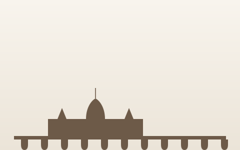
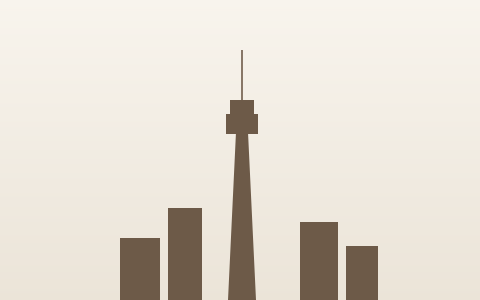

Rahmi Can Yamanoğlu
PhD Candidate in Economic Geography & Regional Science
Gran Sasso Science Institute
L'Aquila, Italy
Education
Visiting PhD Student
Bordeaux School of Economics · Host: Prof. Francesco Lissoni
Bordeaux, France

BordeauxPhD, Regional Science & Economic Geography
Gran Sasso Science Institute
L'Aquila, Italy
MSc, Human Geography
Lund University · Global Scholarship Recipient
Lund, Sweden
BA, Media & Visual Arts (Cum Laude) · Sociology (Double Major)
Koç University
Istanbul, Turkey
Experience
Research Assistant
ST4TE Project · Supervised by Alberto Marzucchi & Andrea Ascani
Gran Sasso Science Institute, Italy
Research Intern
Horizon Europe Project · Cultural & Creative Industries
Utrecht University, Netherlands
Research Assistant
ERC-funded "Emerging Markets Welfare" Project
Koç University, Turkey
Research Assistant
Royal Bank of Canada-funded Immigrant Entrepreneurship Project
Toronto Metropolitan University, Canada

Toronto